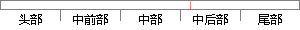

目前MVC框架（Model View Controller）是基于ASP.
片段位置图

相似结果|
相似片段 1：Controller控制着Model和用户之问的交互。2 ASP. NET MVC框架框架 (Framework) 是基于某种定制的应用系统骨架，是整个或部分系统的可重用设计，同时也是组件技术、软件体系结构研究和
相似片段 2：一种软件的设计方法模式，并且被大量的开发和实践证明是行之有效的。Struts对Model，View和 Controller都提供了对应的组件。Struts是一个基于 Sun J2EE平台的MVC框架，主要是采用 Servlet和 JSP技术来实现的。
相似片段 3：，ASP.NET MVC框架提供了一个基于 mvc的应用。model view和 controller，是MVC (Model View Controller)把一个 web应用分成的三个部分。这是微软官方提供
相似片段 4： (ModelViewController)把一个 web 应用分成了三个部分：model view 和controller。ASP.NET MVC 框架提供了一个可以代替 asp.net web 窗体的基于
相似片段 5：最新版本是 ASP.NET MVC 4.0。MVC (Model、View、Controller)将一个 Web 应用分解为：Model、View 和Controller。ASP.NET MVC 框架
相似片段 6：web．xml放在同一个目录下，作为一个MVC的框架，Struts对Model、View和Controller都提供了对应的实现组件【7】o(1)Controller控制器Controller控制器
相似片段 7：ASP. NET MVC 是三种 ASP.NET 编程模式中的一种。MVC 是一种使用（Model View Controller 模型-视图-控制器）设计创建Web应用程序的模式。37MVC模式
相似片段 8：在轻量级 Web 应用中实现MVC 设计模式[18]。MVC 设计模式是指模型（Model）、视图（View）和控制器（Controller）三部分，如图 2-6所示。在基于 MVC模式
相似片段 9：】o2．2．2Struts的处理过程图2．2 MVC原理图Struts处理过程如图2．3所示。图2．3显示出了一个基于Struts应用程序的处理过程，从左到右，分别是表示层(View)、控制层(Controller)、和模型层(Model)。
|
※ 片段修改建议 ※
近似词参考：- 目前：今朝 现在
系统自动生成语句：今朝MVC框架（Model View Controller）是基于ASP.
注：本片段修改建议为系统自动生成，仅供参考。